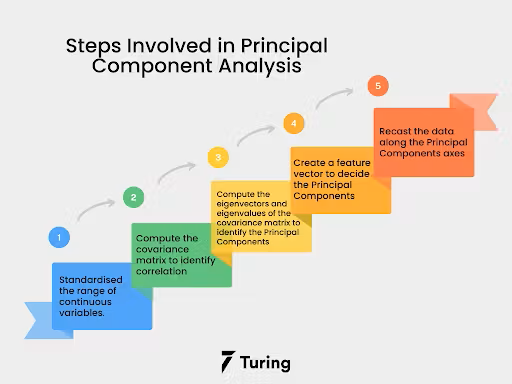
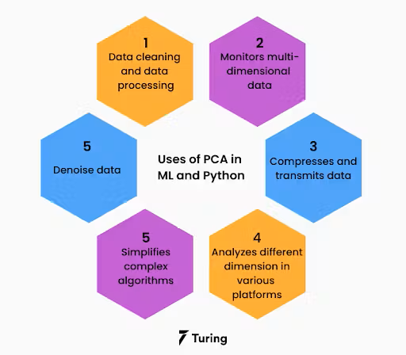
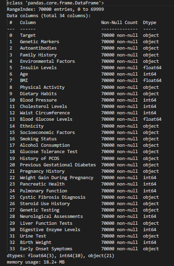
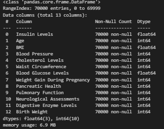
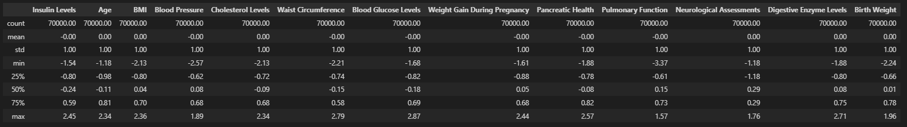
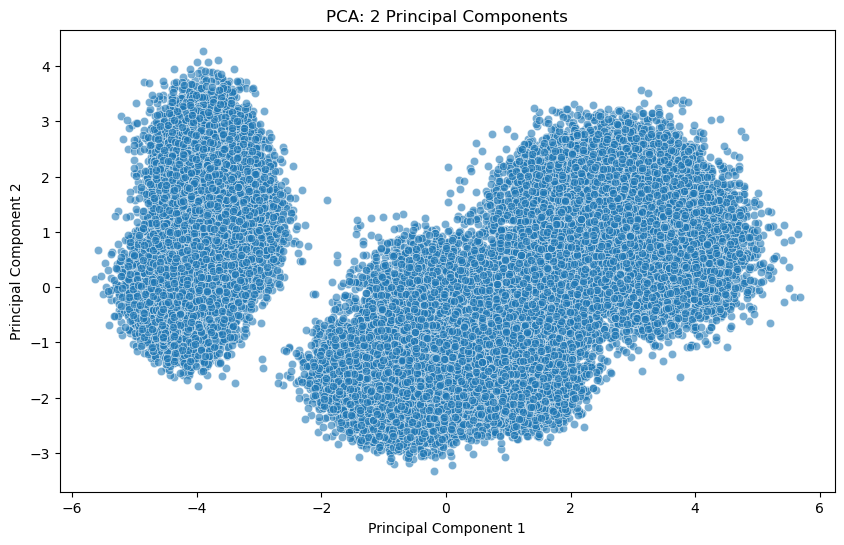
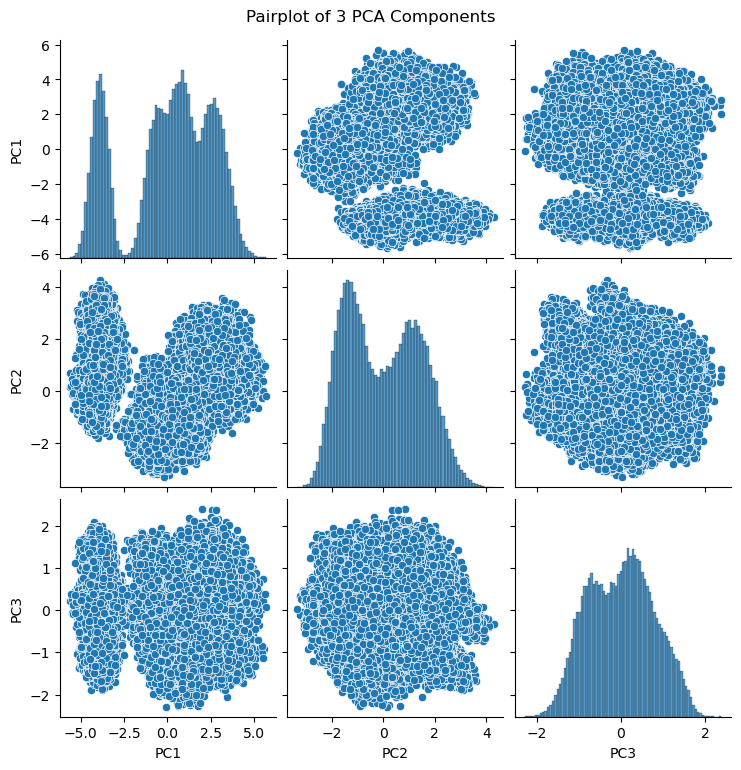
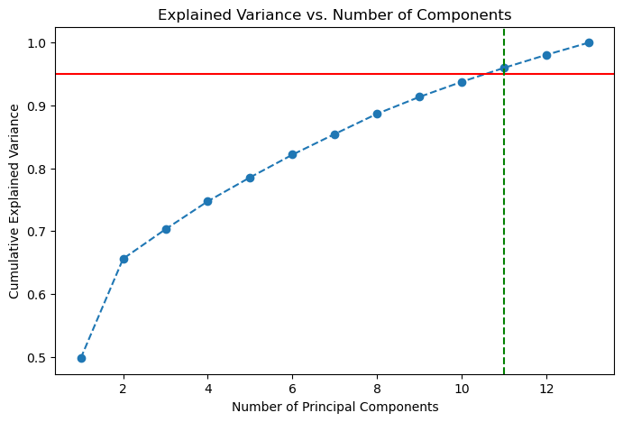

What is PCA?
Principal Component Analysis (PCA) is a dimensionality reduction technique used to transform high-dimensional data into fewer dimensions while preserving as much variance as possible. It helps in reducing computational complexity and improving model performance by identifying key components.
 GitHub Repository
View PCA Code on GitHub ↗Dataset Used
For PCA analysis, we used the cleaned diabetes dataset. Below is a preview of the dataset:
 Download Cleaned Dataset
Download Cleaned Dataset
Data Preprocessing Steps
1. Load the Dataset
The cleaned diabetes dataset is loaded before clustering.
2. Dropping Non-Numeric Columns
Only numerical features are retained for clustering.
3. Standardizing the Columns
StandardScaler is applied to normalize feature values.
PCA Implementation & Results
We applied PCA on the dataset with 2 and 3 components to visualize and analyze the retained variance.
- Variance retained in 2D PCA: 65.61%
- Variance retained in 3D PCA: 70.30%
PCA Visualizations
2D PCA Scatter Plot
3D PCA Pairplot
Top 3 Eigenvalues of the dataset: [6.47232095 2.05658962 0.60963223]
Scree Plot & 95% Variance Retention
To retain at least 95% of the variance, 11 principal components are needed.
PCA Results and Conclusion
Overview of PCA Analysis
Principal Component Analysis (PCA) was performed to reduce the dimensionality of the dataset while preserving the most important variance in the data. The goal was to project the data into a lower-dimensional space to identify key patterns and relationships among features.
Variance Retention
PCA was applied to retain 95% of the variance in the dataset. The optimal number of principal components required to maintain this variance was determined.
- Retained Variance: 95%
- Optimal Principal Components Chosen: 11
Key Data Patterns from PCA Projections
The dataset was projected into both 2D and 3D spaces to visualize the data structure and detect clusters or trends. These projections helped reveal:
- Groupings and clusters in the dataset, indicating potential natural separations.
- The importance of principal components in explaining data variability.
However, if PCA retained only one principal component, 2D and 3D plots were skipped as visualization was not feasible.
Top Influencing Features in PCA
Each principal component represents a linear combination of the original features, with varying importance. The top features contributing to the first few principal components were identified:
| PC1 | PC2 | PC3 | PC4 | PC5 | PC6 | PC7 | PC8 | PC9 | PC10 |
|---|---|---|---|---|---|---|---|---|---|
| Age | Blood Glucose Levels | Neurological Assessments | Pancreatic Health | Insulin Levels | Birth Weight | Digestive Enzyme Levels | BMI | Cholesterol Levels | Waist Circumference |
| Blood Pressure | Pulmonary Function | Insulin Levels | Birth Weight | Digestive Enzyme Levels | Pulmonary Function | Pulmonary Function | Neurological Assessments | Digestive Enzyme Levels | Blood Glucose Levels |
| Weight Gain During Pregnancy | Neurological Assessments | BMI | Pulmonary Function | Pulmonary Function | Insulin Levels | Waist Circumference | Weight Gain During Pregnancy | Blood Glucose Levels | Weight Gain During Pregnancy |
| Cholesterol Levels | Pancreatic Health | Pulmonary Function | Blood Glucose Levels | Weight Gain During Pregnancy | Blood Glucose Levels | Insulin Levels | Cholesterol Levels | Blood Pressure | Pulmonary Function |
| Waist Circumference | Digestive Enzyme Levels | Blood Pressure | Insulin Levels | Birth Weight | Age | Blood Glucose Levels | Digestive Enzyme Levels | Pulmonary Function | BMI |
Conclusion
PCA effectively reduced the dataset’s dimensions while retaining 95% of the original variance. The most important principal components were identified, highlighting key medical and demographic features influencing diabetes-related outcomes.
By using PCA, we achieved:
- Reduction in dimensionality for improved efficiency in clustering and machine learning models.
- Identification of key contributing features, which can be used for further statistical analysis or predictive modeling.
- Better visualization and pattern recognition to understand how the dataset is structured.
PCA plays a crucial role in enhancing model performance and reducing computational complexity, making it an essential preprocessing step in data science workflows.